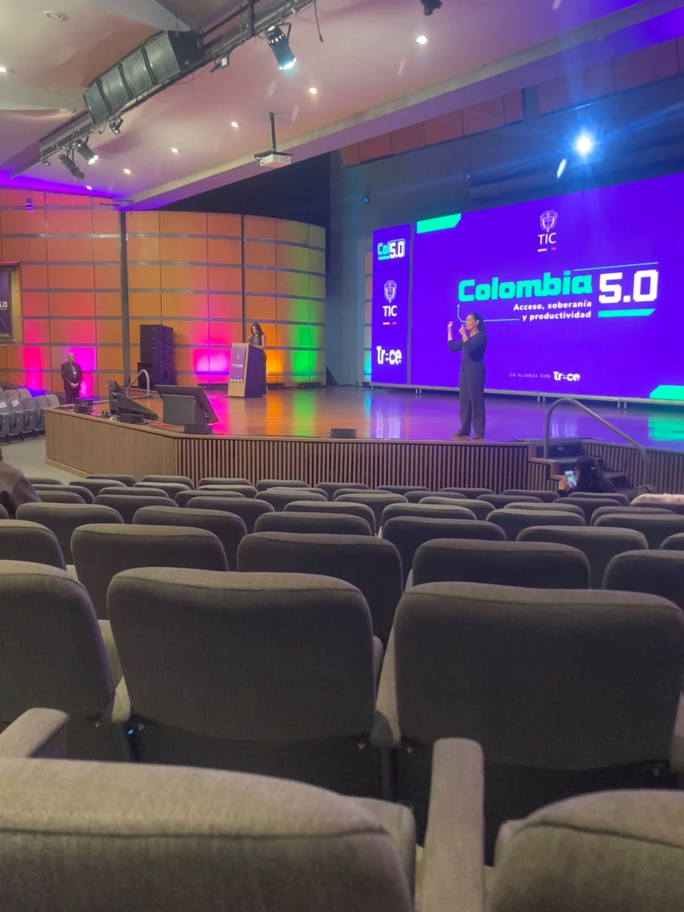

Colombia 5.0 – Conferencia 2 y experiencia en el evento
Conferencia ciberseguridad
Nombre de la conferencia: Protección de infraestructuras digitales críticas: Gobernanza y ciberseguridad de redes móviles para la soberanía nacional
Conferencista: Yanis Cardoso Stoyannis
Tema principal: Ciberseguridad
Resumen
En esta conferencia participó un empresario portugués que habló sobre algunas de las tecnologías e innovaciones que podrían desarrollarse en el futuro. Entre los temas que se discutieron estuvieron una nueva generación de supercomputadoras y el avance hacia la tecnología 6G.
Además se habló sobre el tema de la ciberseguridad, explicando las diferentes vulnerabilidades que puede presentar un software, los métodos que utilizan los atacantes para explotar estas fallas y las consecuencias que pueden generar para los usuarios.
Experiencia durante el evento
Mientras recorría el evento visité los diferentes stands de empresas que estaban presentes y aproveché para enviar algunas hojas de vida, también participé en diferentes actividades. Una de las cuales participé fue la zona gamer, donde se realizaban concursos de videojuegos y actividad física. En una de ellas jugué boley pie, una actividad en la que debíamos hacer pases sin dejar caer el balón al piso. El primer equipo que llegara a 7 puntos era el ganador; aunque perdí, disfruté del evento.
